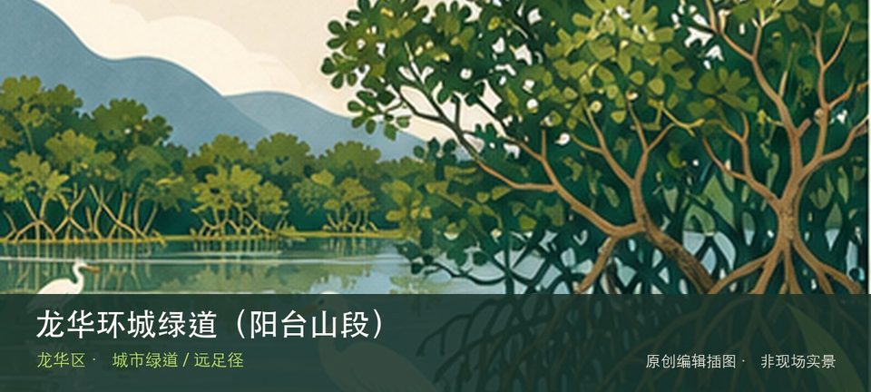

适合谁
适合有基础步行体力、愿意按天气调整路线的人；行动不便者应只选择平缓开放段。

SHENZHEN GUIDE · 237
石凹水库至部九窝绿谷公园段 · 城市绿道 / 远足径
龙华环城绿道（阳台山段）位于石凹水库至部九窝绿谷公园段，约27.9公里的长距离山地段通常06:00—21:30开放，串联三座水库和阳台山森林景观。先辨认赖屋山与冷水坑水库，再观察阳台山18个景观节点，两者共同说明这里为何不能被同类地点的泛化标签替代。现场不必追求一次走完，先在赖屋山与冷水坑水库与阳台山18个景观节点之间确定主线，再按体力、日照和天气保留折返方案。山地、滨水或林下路面会随降雨改变，当天预警和开放边界始终比旧轨迹更优先。
WHY GO
适合有基础步行体力、愿意按天气调整路线的人；行动不便者应只选择平缓开放段。
初访从胜利大营救广场、冷水坑水库或绿谷公园三处中只选一个入口，先完成赖屋山—冷水坑水库附近的短段，再按原计划退出。
从胜利大营救广场、冷水坑水库或绿谷公园一侧分段进入；先确定同一入口往返或终点接驳，不把27.9公里当作普通公园环线。
车辆只停所选分段入口附近的正规停车场；跨段前先解决终点接驳，水库管理道路、村道和消防通道不停车。
10月至次年4月适合山地长线；4—9月湿热、雷雨集中，暴雨或地质灾害预警时不进入水库边坡和林下陡段。
NEARBY IDEAS
 编辑配图·非现场实景
编辑配图·非现场实景
阳台山环线位于胜利大营救广场起终点，跨龙华、宝安和南山，约38.5公里的挑战级环线串联阳台山主脊、山石景观与多处水库，只适合按天气和体力计划。
 编辑配图·非现场实景
编辑配图·非现场实景
阳台山森林公园位于宝安石岩侧与龙华大浪侧，跨区山体总面积大，石岩侧与大浪侧对应不同入口、爬升和返程体系，必须先选一侧再谈登山路线。
 编辑配图·非现场实景
编辑配图·非现场实景
新新美术馆位于彩田南路，城市楼宇中的民营美术馆以阶段性艺术展览和文化活动为主，小尺度空间更适合围绕一个主题细看而非期待大型馆藏。